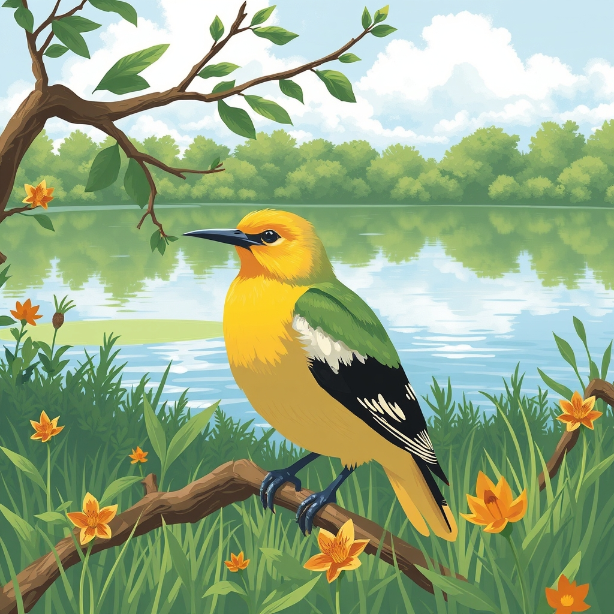

침묵의 봄
목차
작가
레이첼 카슨
출판일
1962년
감상평에 대한 AI그림
이 책을 시작으로 환경오염에 대한 심각성을 알리는데 큰 기여를 하였으며, 그 중에서도 DDT를 비롯한 농약에 대한 부작용을 알리는 것이 책의 내용이다. 이 책을 읽으며 DDT에 화학성분에 대해 알게 되었고 DDT가 해양에 미치는 영향에 대해 관심을 가지게 되었다.

감상평에 대한 AI평가
~~~~AI평가~~~~~
✨ 이 감상평은 **『침묵의 봄』**의 핵심 주제인 환경오염 문제, 특히 DDT와 농약의 부작용을 잘 짚고 있습니다.
✨ 또한 **"DDT의 화학 성분에 대해 알게 되었고, 해양에 미치는 영향에 관심을 가지게 되었다."**라고 개인적인 학습 경험을 포함한 점은 좋습니다.